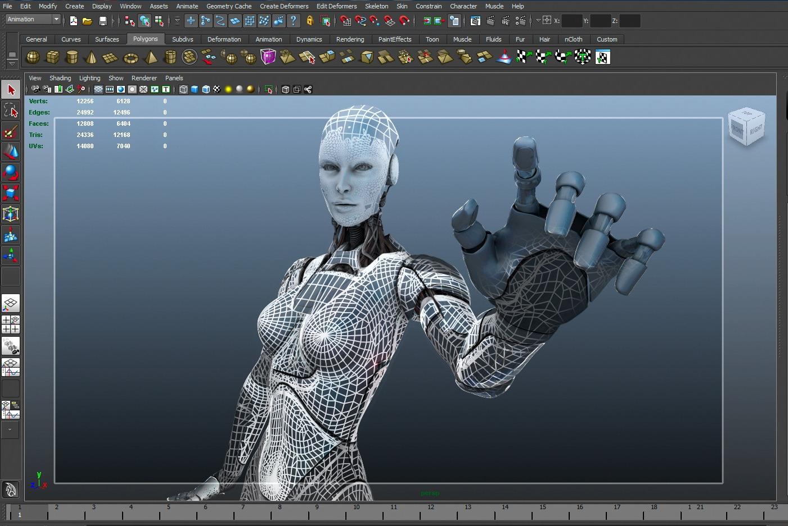

Maya Specifics Install¶
Installing Maya 2015 on Kubuntu 14.04 15.04¶
{kind=link}
install extra packages¶
first install some extra packages: details on this page from the Autodesk site
su -
apt-get install --yes csh tcsh libjpeg62
apt-get install --yes libglw1-mesa libglw1-mesa-dev mesa-utils elfutils
apt-get install --yes xfsprogs xfstt ttf-liberation xfonts-100dpi xfonts-75dpi
apt-get install --yes libaudiofile* libfam0 libfam-dev
you also need alien to convert .rpm (RedHat) to .deb (Debian) packages and lsb to run the license server
apt-get install --yes alien lsb
download maya 2015 SP6¶
download maya 2015 SP6 and extract the installation files in /var/tmp
mkdir /var/tmp/maya
cd /var/tmp/maya
tar -xvzf Autodesk_Maya_2015_SP6_EN_Linux.tgz
convert .rpm (RedHat) to .deb (Debian)¶
for i in *.rpm; do sudo alien -cv $i; done
install License server (for network licensing)¶
dpkg -i adlmflexnetserver_9.0.23-201_amd64.deb
update adskflex and lic.dat
cp /var/tmp/adskflex /opt/flexnetserver/
cp /var/tmp/lic.dat /opt/flexnetserver/
edit lic.dat and update the mac adress of the server and the server name
ifconfig | grep HWaddr
pick the mac adress of the server NIC
eth0 Link encap:Ethernet HWaddr 00:e0:81:79:c1:7a
vi /opt/flexnetserver/lic.dat
replace server name and macadress (without :)
SERVER myhostname 00e08179c17a
VENDOR adskflex
...
misc details
mkdir /usr/tmp
chmod 777 /usr/tmp
chmod 777 /opt/flexnetserver/lic.dat
start the server (as a non root user)
cd /opt/flexnetserver
/opt/flexnetserver/lmgrd -c lic.dat
the license server should be up and running and listening to port 27000
...
13:35:12 (lmgrd) (@lmgrd-SLOG@) Listening port: 27000
...
Installing Maya Software¶
dpkg -i adlmapps9_9.0.23-201_amd64.deb
dpkg -i maya2015-64_2015.0-734_amd64.deb
dpkg -i mentalrayformaya2015-0_2015.0-20_amd64.deb
you should have these directories installed:
/var/opt/Autodesk/Adlm/R9
/opt/Autodesk/Adlm/FLEXnet/
/var/flexlm/
/usr/autodesk/maya2015-x64
/usr/autodesk/mentalrayForMaya2015/
edit the license files
vi /usr/autodesk/maya2015-x64/bin/License.env
and leave only these two lines..
MAYA_LICENSE=657G1
MAYA_LICENSE_METHOD=network
Create a file called maya.lic in the /var/flexlm directory with the following two lines:
SERVER <licenseserver> 0
USE_SERVER
where <licenseserver> is the host name or IP address of your license server.
Run the following commands to register Maya with the Autodesk licensing software (Network licensing)
/usr/autodesk/maya2015-x64/bin/adlmreg -i N 657G1 657G1 2015.0.0.F <serialNum> /var/opt/Autodesk/Adlm/Maya2015/MayaConfig.pit
<serialNum> should be something like xxx-xxxxxxxx
update libadlmint.so.9.0.23
cp /var/tmp/libadlmint.so.9.0.23 /usr/autodesk/maya2015-x64/lib/
almost there :)¶
hacking the libs
cp /var/tmp/maya/lib* /usr/lib/
ln -s /usr/lib/x86_64-linux-gnu/libcrypt.so /usr/autodesk/maya2015-x64/lib/libcrypto.so.10
ln -s /usr/lib/x86_64-linux-gnu/libjpeg.so.62 /usr/lib/libjpeg.so.62
ln -s /usr/lib/x86_64-linux-gnu/libtiff.so.5.2.0 /usr/lib/libtiff.so.3
cd /usr/lib/x86_64-linux-gnu/
ln -s /lib/x86_64-linux-gnu/libssl.so.1.0.0 libssl.so.10
ln -s libssl.so.10 libssl.so.1.0.0
To prevent various crashes
vi /usr/autodesk/maya2015-x64/bin/maya2015
Search for
setenv LIBQUICKTIME_PLUGIN_DIR "$MAYA_LOCATION/lib"
After that line add the following:
setenv LD_PRELOAD /usr/lib/x86_64-linux-gnu/libjpeg.so.62
setenv LC_ALL en_US.UTF-8
setenv LC_NUMERIC C
if you have problems with bitfrost crashing maya
mkdir /usr/autodesk/maya2015-x64/plugin-backups
mv /usr/autodesk/maya2015-x64/plug-ins/bifrost /usr/autodesk/maya2015-x64/plugin-backups/
launching maya
export MAYA_LOCATION=/usr/autodesk/maya2015-x64/
export LD_LIBRARY_PATH=/opt/Autodesk/Adlm/R9/lib64/
xset +fp /usr/share/fonts/X11/100dpi/
xset +fp /usr/share/fonts/X11/75dpi/
maya -style gtk
done!¶
Misc Web References¶
lot of infos here ...
http://forums.autodesk.com/t5/installation-licensing/installing-maya-on-ubuntu/td-p/4905036 http://askubuntu.com/questions/392806/installing-maya-on-ubuntu-linux https://gist.github.com/insomniacUNDERSCORElemon/5555214 http://nealbuerger.com/2013/05/ubuntu-13-04-maya-2014-install-script/ http://www.nkoubi.com/blog/tutorial/how-to-install-autodesk-maya-2011-on-debian-ubuntu/ http://www.andrewhazelden.com/blog/2014/10/autodesk-nlm-licensing-issues-with-maya-2015-and-max-2015/